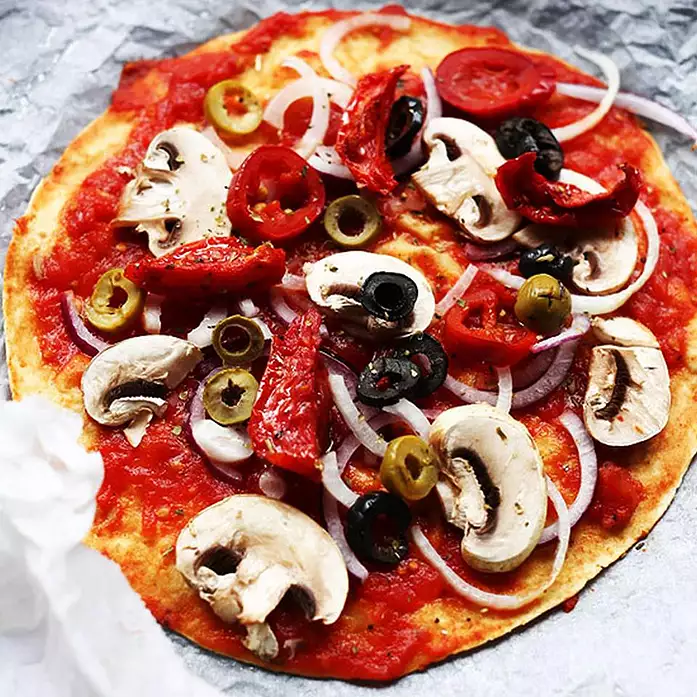

Pizza Recipe

A wonderful Pizza!
Ingredients:
- 1 tablespoon vegetable oil
- 2 (12 inch) flour tortillas
- ½ cup tomato sauce, or more to taste
- 5 mushrooms, sliced
- ½ green bell pepper, chopped
- ½ red onion, chopped
- ½ white onion, chopped
- 5 black olives, sliced
- 3 pieces sun-dried tomatoes, chopped
- ½ jalapeno pepper, chopped
Steps:
- Preheat the oven to 400 degrees F (200 degrees C). Line a baking sheet with parchment paper and brush with olive oil.
- Place a tortilla on the prepared baking sheet; add 1/4 cup of tomato sauce. Top with another tortilla and spread another 1/4 cup tomato sauce over the tortilla. Decorate the pizza with mushrooms, green bell pepper, red onion, white onion, black olives, sun-dried tomatoes, and jalapeno pepper.
- Bake in the preheated oven until toppings are softened, about 20 minutes.
Nutrition Facts:
Per Serving: 245 calories; protein 6.5g; carbohydrates 35.7g; fat 8.8g; sodium 620.6mg.